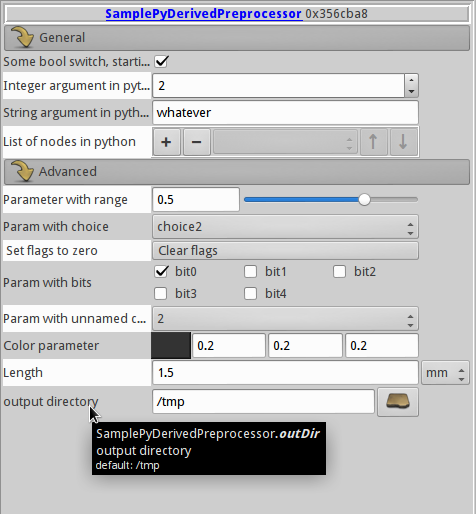

woo.pyderived¶
Support subclassing c++ objects in python, with some limitations. Useful primarily for pure-python preprocessors.
- class woo.pyderived.PyAttrTrait(pyType, name, ini, doc, unit=None, noGui=False, noDump=False, rgbColor=False, startGroup=None, hideIf=None, range=None, choice=None, bits=None, buttons=None, altUnits=None, filename=False, existingFilename=False, dirname=False, psd=False, triggerPostLoad=False, guiReadonly=False, noGuiResize=False, colormap=False, deprecated=False)[source]¶
Class mimicking the AttrTrait template in c++, to be used when deriving from
PyWooObject, like in this example (can be found in woo.pyderived module’s source):class _SamplePyDerivedPreprocessor(woo.core.Preprocessor,PyWooObject): 'Sample preprocessor written in pure python' _attrTraits=[ PyAttrTrait(bool,'switch',True,"Some bool switch, starting group",startGroup='General'), PyAttrTrait(int,'a',2,"Integer argument in python"), PyAttrTrait(str,'b','whatever',"String argument in python"), PyAttrTrait([Node,],'c',[],"List of nodes in python"), PyAttrTrait(float,'d',.5,"Parameter with range",range=Vector2(0,.7),startGroup='Advanced'), PyAttrTrait(int,'choice',2,"Param with choice",choice=[(0,'choice0'),(1,'choice1'),(2,'choice2')]), PyAttrTrait(int,'flags',1,"Param with bits",bits=['bit0','bit1','bit2','bit3','bit4'],buttons=(['Clear flags','self.flags=0','Set flags to zero'],True)), PyAttrTrait(int,'choice2',2,'Param with unnamed choice',choice=[0,1,2,3,4,5,6,-1]), PyAttrTrait(Vector3,'color',Vector3(.2,.2,.2),"Color parameter",rgbColor=True), PyAttrTrait(float,'length',1.5e-3,"Length",unit='mm'), ] # this is needed for new-style pickling with pybind11 def __new__(klass,**kw): self=super().__new__(klass) # do not use self.__class__ here, it would break classes derived further from this class self.wooPyInit(SamplePyDerivedPreprocessor,woo.core.Preprocessor,**kw) return self # this is needed for old-style pickling with boost::python def __init__(self,**kw): woo.core.Preprocessor.__init__(self) self.wooPyInit(SamplePyDerivedPreprocessor,woo.core.Preprocessor,**kw) def __call__(self): pass # ...
This class will be represented like this in the GUI:
- Parameters
pyType –
python type object; can be
primitive type (like bool, float, Vector3, str, …)
sequence of primitive types, written as 1-list: [bool,], [float,], …
woo Objector any derived type (woo.core.Node,woo.dem.Sphere, …)sequence of woo objects, e.g. [woo.core.Node,]
When a value is assigned to the attribute, provided type must be convertible to pyType, otherwise TypeError is raised. There are some additional restrictions:
str and unicode values will not be converted to floats and such − although python will accept float(‘1.23’)
name – name of the attribute, given as str
ini – initial (default) value of the attribute
doc (str) – documentation for this attribute, as it appears in generated docs and tooltips in the UI
unit (str) –
unit given as string, which is looked up in
woo.unit; the multiplier is the ratio between unit and associated basic unit, which is found automatically.Warning
unit only determines multiplier for the GUI representation; it has no impact on the internal value used; in particular, the ini value is unit-less. If you want to give units to the initial value, say something like
PyAttrTrait(float,'angle',60*woo.unit['deg'],units='deg','This is some angle').noGui (bool) – do not show this attribute in the GUI; use this for attributes which the GUI does not know how to represent (such as python objects, numpy arrays and such), to avoid warnings.
noDump (bool) – skip this attribute when dumping/loading this object; that means that after loading (or after a
PyWooObjects.deepcopy), the attribute will be default-initialized.rgbColor (bool) – this attribute is color in the RGB space (its type must be Vector3); the GUI will show color picker.
startGroup (str) – start new attribute group, which is represented as collapsible blocks in the GUI.
hideIf (str) – python expression which determines whether the GUI hide/show this attribute entry dynamically; use self to refer to the instance, as usual.
range – give range (Vector2 or Vector2i) to this numerical (float or int) attribute − a slider will be shown in the GUI.
choice –
this attribute chooses from predefined set of integer values; choice itself can be
list of unnamed values, e.g. [0,1,2,3,4] to choose from;
list of named values, e.g. [(0,’choice0’),(1,’choice1’),(2,’choice2’)], where the name will be displayed in the GUI, and the number will be assigned when the choice is made.
bits – give names for bit values which this (integer) attribute which represents; they will be shown as array of checkboxes in the GUI.
buttons –
Tuple of list and bool; in the flat list of strings, where each consecutive triplet contains
button label
python expression to evaluate when the button is clicked
label to be shown as button description in the GUI
The bool at the end determined whether the button is created above (True) or below (False) the current attribute.
filename – str attribute representing filename with file picker in the GUI; the file is possibly non-existent.
existingFilename – str attribute for existing filename, with file picker in the GUI.
dirname – str attribute for existing directory name, with directory picker in the GUI.
triggerPostLoad – when this attribute is being assigned to, self.postLoad(‘attrName’) will be called.
- coerceValue(val)[source]¶
Check whether val has type compatible with declared type (pyType). Raise exception if not. Values converted to required types are returned (it is safe to ignore the return value). In addition, validate the (converted) value, if a validator is defined
- primitiveTypes = {<class 'int'>: 'int', <class 'str'>: 'string', <class 'float'>: 'Real', <class 'bool'>: 'bool', <class '_wooEigen11.Vector2'>: 'Vector2r', <class '_wooEigen11.Vector3'>: 'Vector3r', <class '_wooEigen11.Vector6'>: 'Vector6r', <class '_wooEigen11.Matrix3'>: 'Matrix3r', <class '_wooEigen11.Matrix6'>: 'Matrix6r', <class '_wooEigen11.Quaternion'>: 'Quaternionr', <class '_wooEigen11.Vector2i'>: 'Vector2i', <class '_wooEigen11.Vector3i'>: 'Vector3i', <class '_wooEigen11.Vector6i'>: 'Vector6i', <class '_wooEigen11.AlignedBox3'>: 'AlignedBox3r', <class '_wooEigen11.MatrixX'>: 'MatrixXr', <class '_wooEigen11.VectorX'>: 'VectorXr'}¶
- class woo.pyderived.PyWooObject[source]¶
Define some c++-compatibility functions for python classes. Derived class is created as:
class SomeClass(woo.core.Object,woo.pyderived.PyWooObject): # order of base classes important! _attrTraits=[ # see below ] # new-style pickling with pybind11 def __new__(klass,**kw): self=super().__new__(klass) self.wooPyInit(SomeClass,woo.core.Object,**kw) return self # for old-style pickling with boost::python def __init__(self,**kw): woo.core.Object.__init__(self) self.wooPyInit(SomeClass,woo.core.Object,**kw) # do NOT use self.__class__ instead of SomeClass, that would break classes deriving from SomeClass
This new class automatically obtains several features:
dumping/loading via
woo.core.Object.dumpetc works.the GUI (
woo.qt.ObjectEditor) will know how to present this class.documentation for this class will be generated
all attributes are type-checked when assigned
support for postLoad hooks (see below)
The _attrTraits ist a list of
PyAttrTrait; each attribute is defined via its traits, which declare its type, default value, documentation and so on – this is documented withPyAttrTrait.This example shows trait definitions, and also the triggerPostLoad flag:
class SomeClass(woo.core.Object,woo.pyderived.PyWooObject): _PAT=woo.pyderived.PyAttrTrait # alias for class name, to save typing _attrTraits=[ _PAT(float,'aF',1.,'float attr'), _PAT([float,],'aFF',[0.,1.,2.],'list of floats attr'), _PAT(Vector2,'aV2',(0.,1.),'vector2 attr'), _PAT([Vector2,],'aVV2',[(0.,0.),(1.,1.)],'list of vector2 attr'), _PAT(woo.core.Node,'aNode',woo.core.Node(pos=(1,1,1)),'node attr'), _PAT([woo.core.Node,],'aNNode',[woo.core.Node(pos=(1,1,1)),woo.core.Node(pos=(2,2,2))],'List of nodes'), _PAT(float,'aF_trigger',1.,triggerPostLoad=True,doc='Float triggering postLoad'), ] def postLoad(self,I): if I==None: pass # called when constructed/loaded elif I=='aF_trigger': pass # called when aF_trigger is modified def __new__(klass,**kw): pass # ... def __init__(self,**kw): pass # ...
The postLoad function is called with
None when the instance has just been created (or loaded); it shoud be idempotent, i.e. calling postLoad(None) the second time should have no effect:
SomeClass() # default-constructed; will call postLoad(None) SomeClass(aF=3.) # default-construct, assign, call postLoad(None)
id(self.attr) when self.attr is modified; this can be used to check for some particular conditions or modify other variables:
instance=SomeClass() # calls instance.postLoad(None) instance.aF_trigger=3 # calls instance.postLoad('aF_trigger')
Note
Pay attention to not call postLoad in infinite regression.
Python classes may be further derived from in python, along those lines:
class SomeChild(SomeClass): # python base class only _PAT=woo.pyderived.PyAttrTrait _attrTraits=[ _PAT(float,'extraAttr',1.,triggerPostLoad=True,doc='Attributes as usual; postLoad is supported.'), ] def postLoad(self,I): if I=='extraAttr': pass # don't forget to eventually call parent's class postLoad, if you define postLoad in the derived class # otherwise the triggers from the parents class would not work else: super(SomeChild,self).postLoad(I) # newer pickling (pybind11) def __new__(klass,**kw): self=super().__new__(klass) self.wooPyInit(SomeChild,SomeClass,**kw) # this class, parent class, keywords return self # older pickling (boost::python) def __init__(self,**kw): SomeClass.__init__(self) # default-construct the parent self.wooPyInit(SomeChild,SomeClass,**kw) # this class, parent class, keywords
Derived classes should suppor pickling, GUI, documentation, type-checking, postLoad just like python class deriving from c++ directly. The internal machinery is checked by
woo.tests.core.TestPyDerived.
Tip
Report issues or inclarities to github.